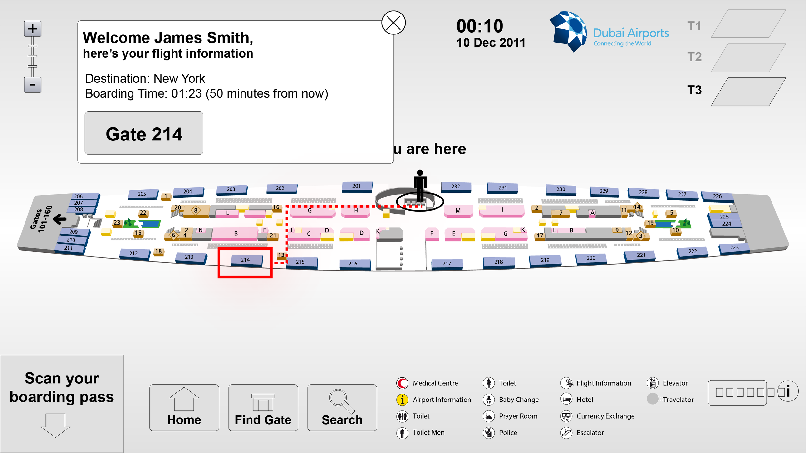
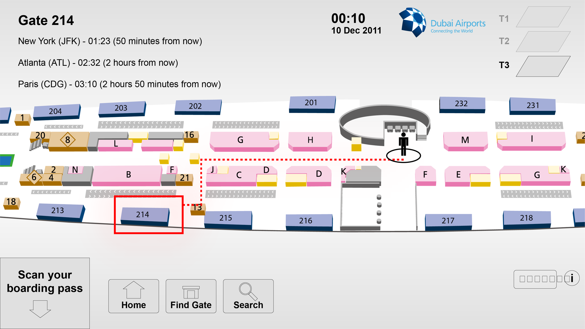
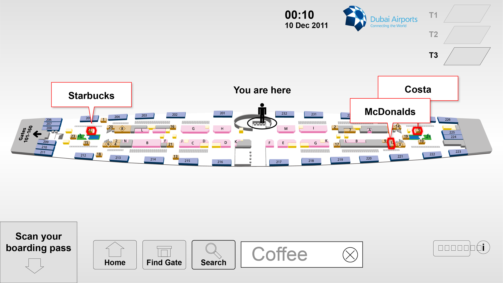

Dubai Airport
Dubai International Airport was looking for solutions to refit their terminals with a new way-finding system that would allow transit passengers as well as destination travellers to find attractions and their gate easily.
The solution was to design 50″ touch screen terminals where the passenger could scan their boarding card and be directed in the terminal to their gate as well as an easy way to find shops and facilities.

Scan your boarding card in Dubai Airport and it tells you exactly where to go.

